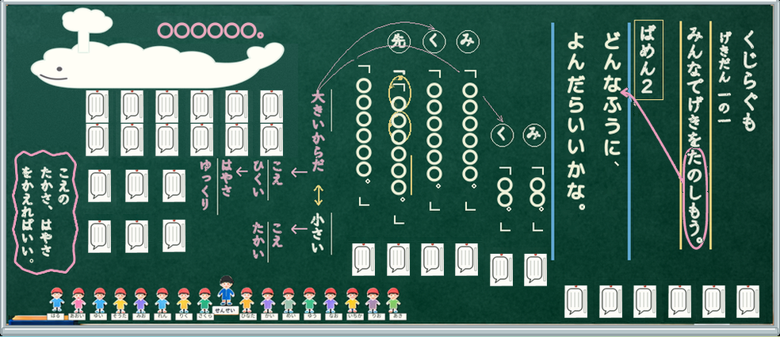
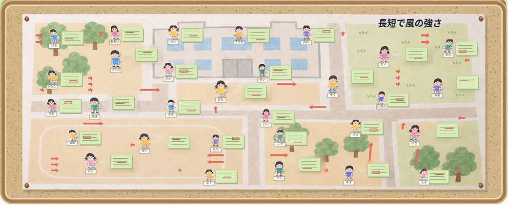

黒板の物語にも、生活科のマップにも、小さな「自分」が登場します。子どもが顔や服を描いた紙の「自分人形」。国語科と生活科で、子どもの思いや気付きを見える形にするために使っています。
国語科「くじらぐも」では、物語の中にいる自分を想像し、その思いを書いた吹き出しを人形と一緒に黒板へ。
生活科では、風のおもちゃで遊びながら、見付けた風や気付きを「かぜさんマップ」に記録します。気付きを書いた付箋を残しながら、今お気に入りのかぜさんがいる場所に人形を貼ります。一人一人の思いや気付きを、小さな自分とともに見える形にする使い方です。
鉛筆やクーピーで自分を描く楽しさがあり、できあがった人形には愛着ももてます。
国語科｜くじらぐも
物語の中にいる自分を想像する
国語科「くじらぐも」で使うのは、赤い体育帽子をかぶった自分人形です。教科書の会話文の読み方を工夫する活動を通して、本文に戻り、場面を想像します。
そのあと、そこにいる「自分だったら」と、吹き出しに書く言葉を考えます。
各場面の終わりに、その思いを縦書きの吹き出しへ。
黒板では自分人形と一緒に貼るので、誰の思いなのかも分かります。貼った吹き出しを互いに見ながら、思いを交流できます。音読のときに、自分のせりふとして付け足す使い方もしています。

書かれた言葉には、教師が赤書きで応えます。共感したり、もう少し考えを引き出したりする言葉も添えています。
一場面ごとの吹き出しに赤書きを添え、次の授業のはじめに紹介します。
友達のよさや「こうやって書けばいいんだ。」という気付きを共有してから、その時間の学習へ入ります。
5場面分を画用紙に貼り、ファイルに綴じます。学びの足跡として、評価にも使えます。
生活科｜かぜさんマップ
気付きは残し 人形は今の場所へ
生活科の「かぜさんマップ」では、自分人形の役割が変わります。
貼るのは、「お気に入りのかぜさんがいる場所」です。
気付いたことは同じ大きさの付箋に書き、マップに残して蓄積していきます。そこに教師が赤書きをして、気付きを価値付けたり、方向付けたりしています。
風を表す矢印には市販のシールを使い、長短の違いで強さを示しています。
授業で試すときには、こんな方法も。矢印は、子どもがシールを貼っても、直接描き込んでも。

付箋に残した気付きはそのままに、自分人形は、その時の状態に合わせて場所を移し、貼り替えます。
これまでの気付きと、今お気に入りのかぜさんがいる場所を、一枚のマップで見ることができます。貼ったものを互いに見合い、友達の気付きも共有します。
子どもが自分で貼れるように、貼り方にもひと工夫。
黒板では人形の裏に板マグネットを付け、紙のマップではセロハンテープをくるりんちょと輪にします。
使う場所に合わせて準備しておけば、自分の人形を自分の手で貼れます。
国語科では思いを添え、生活科ではお気に入りの場所を示す。同じ人形を、授業に合わせて使っています。
まずは、鉛筆やクーピーで自分人形を描くところから。先生の学級でも、どんな場面で使えそうでしょうか。